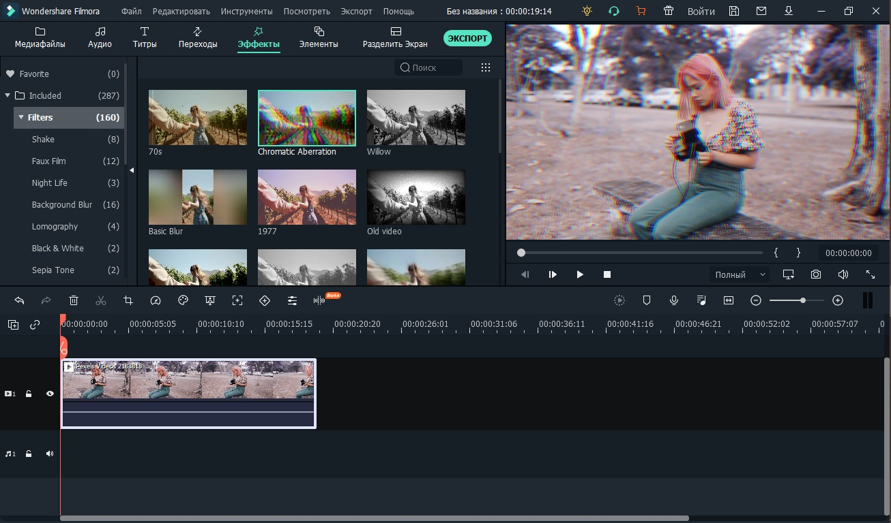
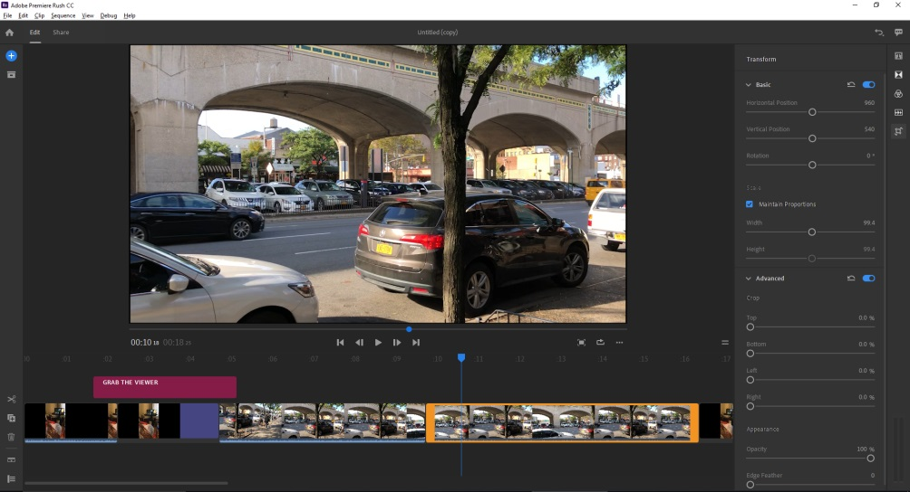
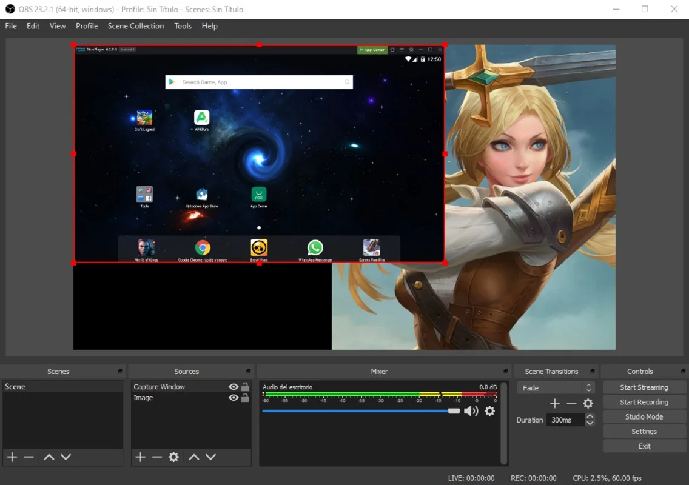
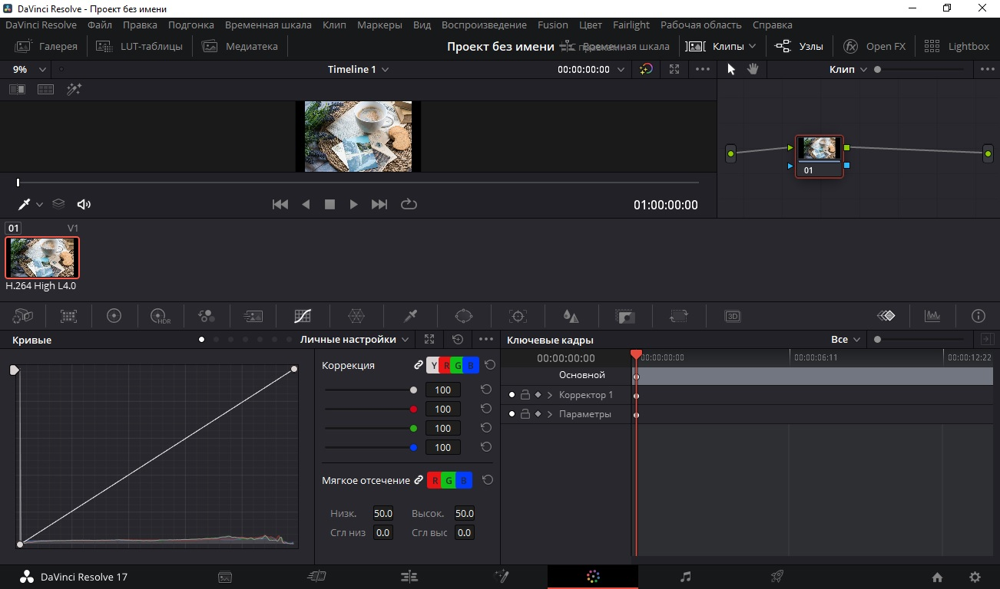
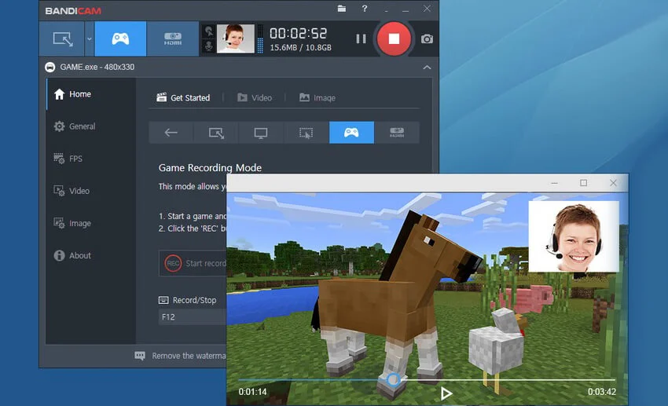

Приветствуем вас на разделе сайта Проект КА!0Б. Здесь вы получите необходимую информацию по программам, проверенным лично создателем сайта, для видео-аудио контента!

–Filmora Wondershare — это простой видеоредактор для начинающих пользователей. Профессионального результата с его помощью добиться не получится, но софт подойдет для начинающих видеомонтажеров и влогеров, создающих контент для социальных сетей и YouTube. Приложение поддерживает все видеоформаты, а также редактирование и вывод видео в формате HD и 4K. Здесь предусмотрена коллекция видеофильтров, также можно работать с цветовой схемой клипа, добавлять звуковую дорожку.
Плюсы:
–Поддержка разрешения 4К и HD.
–Удобный минималистичный интерфейс.
–Крупная коллекция видеоэффектов.
Минусы:
–Редактор платный, многие функции нужно докупать дополнительно.
–Сильное потребление ресурсов системы.
–Нет записи звука с микрофона.
–В демо-версии накладывается водяной знак.

–Adobe Premiere Rush — это упрощенная версия профессионального видеоредактора Adobe Premiere Pro, предназначенная для создания и редактирования видео на ходу.
Плюсы:
–Кроссплатформенность: Premiere Rush доступна на различных устройствах, включая смартфоны, планшеты и настольные компьютеры.
–Интуитивно понятный интерфейс: Программа имеет удобный и понятный интерфейс, который подходит как для новичков, так и для опытных пользователей.
–Синхронизация проектов: Premiere Rush позволяет синхронизировать проекты между устройствами, что облегчает работу в дороге.
–Интеграция с Adobe Creative Cloud: Пользователи могут легко импортировать материалы из других приложений Adobe, таких как Photoshop или After Effects.
Минусы:
–Ограниченные функции редактирования: В сравнении с Premiere Pro, Rush имеет ограниченный набор инструментов и эффектов.
–Ограничения бесплатной версии: Бесплатная версия имеет ограничения по количеству экспортируемых проектов и доступным функциям.
–Требования к системе: Для бесперебойной работы программы требуется современное оборудование, особенно при работе с высококачественными видео.

–OBS Studio — это популярное программное обеспечение для записи видео и трансляции в реальном времени, доступное для Windows, macOS и Linux.
Плюсы:
–Бесплатное и открытое ПО: OBS Studio предоставляется бесплатно и имеет открытый исходный код, что позволяет сообществу вносить свой вклад в развитие программы.
–Поддержка множества источников: Поддерживает различные источники видео, включая камеры, захват экрана и медиафайлы.
–Гибкие настройки трансляции: Пользователи могут настроить множество параметров трансляции и записи, включая битрейт, разрешение и кодеки.
–Мощные функции смешивания: Включает в себя возможности смешивания аудио и видео, переходы между сценами и использование фильтров.
Минусы:
–Крутая кривая обучения: Новичкам может быть сложно разобраться во всех функциях и настройках OBS Studio.
–Требовательность к ресурсам: Для стабильной работы и высококачественной трансляции требуется достаточно мощное оборудование.
–Отсутствие встроенной поддержки: Так как это бесплатное ПО, пользователи могут столкнуться с ограниченной поддержкой и придется полагаться на сообщество или самостоятельно искать решения проблем.

–DaVinci Resolve — это профессиональное программное обеспечение для видеомонтажа, цветокоррекции, пост-продакшена аудио и визуальных эффектов.
Плюсы:
–Мощные инструменты цветокоррекции: DaVinci Resolve широко известен своими продвинутыми возможностями цветокоррекции.
–Интеграция нескольких модулей: Объединяет монтаж, цветокоррекцию, аудио пост-продакшен и визуальные эффекты в одном приложении.
–Бесплатная версия: Предлагает бесплатную версию с множеством профессиональных функций.
–Поддержка многопользовательской работы: Позволяет нескольким пользователям одновременно работать над одним проектом.
Минусы:
–Высокие системные требования: Для полноценной работы требуется мощное компьютерное оборудование.
–Сложность освоения: Из-за большого количества функций новичкам может быть сложно быстро научиться использовать программу.
–Ограничения бесплатной версии: Некоторые продвинутые функции доступны только в платной версии программы.

–Bandicam — это программное обеспечение для захвата экрана, которое позволяет пользователям записывать определенные области на экране ПК или игры, использующие графические технологии DirectX/OpenGL/Vulkan.
Плюсы:
–Высокое качество записи: Bandicam может записывать видео в высоком разрешении до 4K UHD.
–Низкое потребление системных ресурсов: Программа оптимизирована для работы, которая оказывает минимальное влияние на производительность системы.
–Гибкие настройки записи: Пользователи могут выбирать между записью всего экрана, выбранной области, или определенного приложения.
–Функции для записи игр: Bandicam поддерживает запись игр с высокой частотой кадров.
Минусы:
–Ограничения бесплатной версии: В бесплатной версии есть ограничение по времени записи и водяной знак на видео.
–Сложность в использовании некоторых функций: Некоторые пользователи могут найти интерфейс и настройки сложными для понимания.
–Отсутствие встроенного видеоредактора: Для редактирования записанных видео может потребоваться дополнительное программное обеспечение.